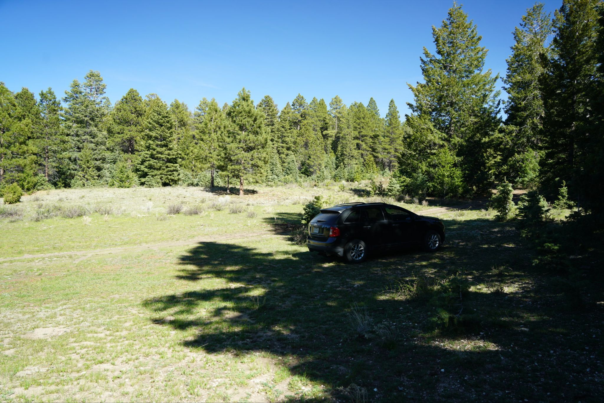
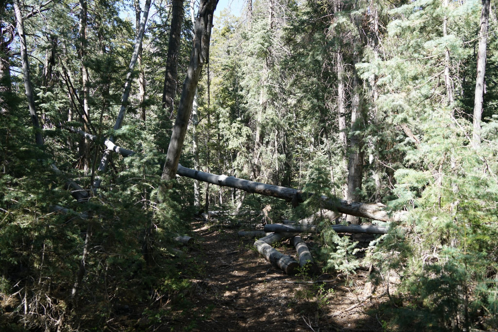
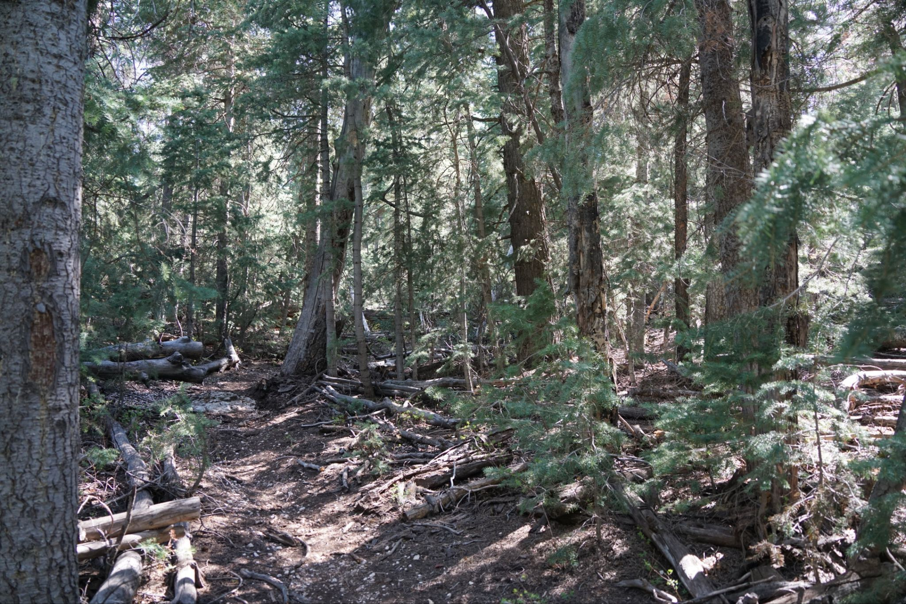
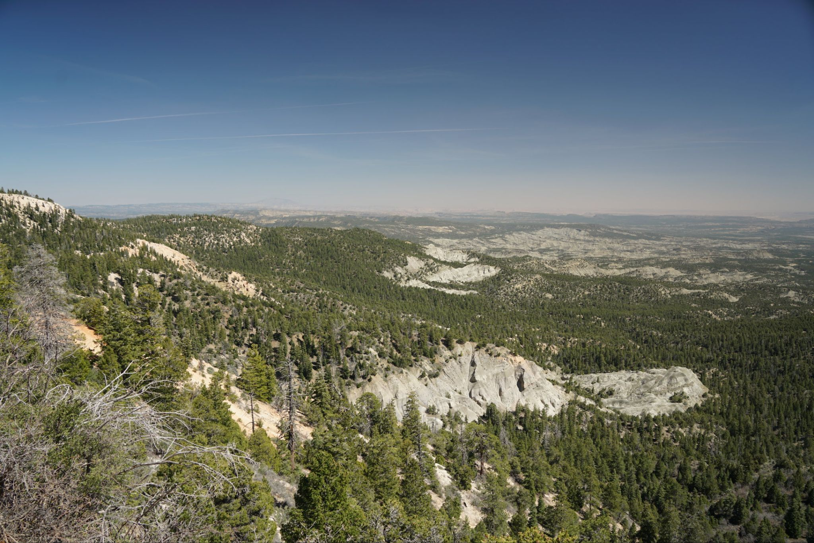
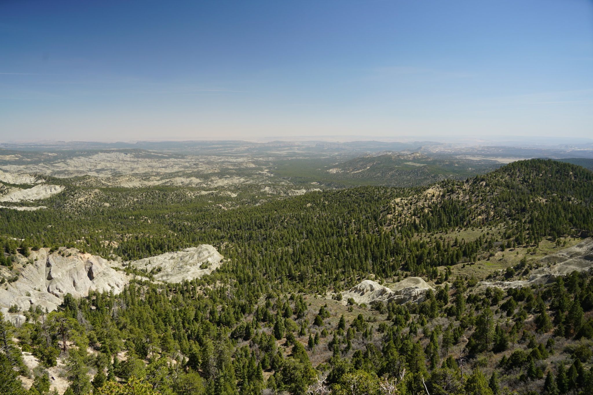
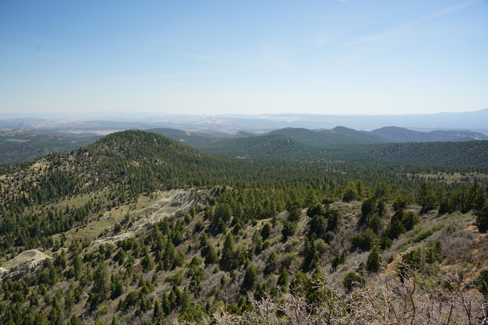
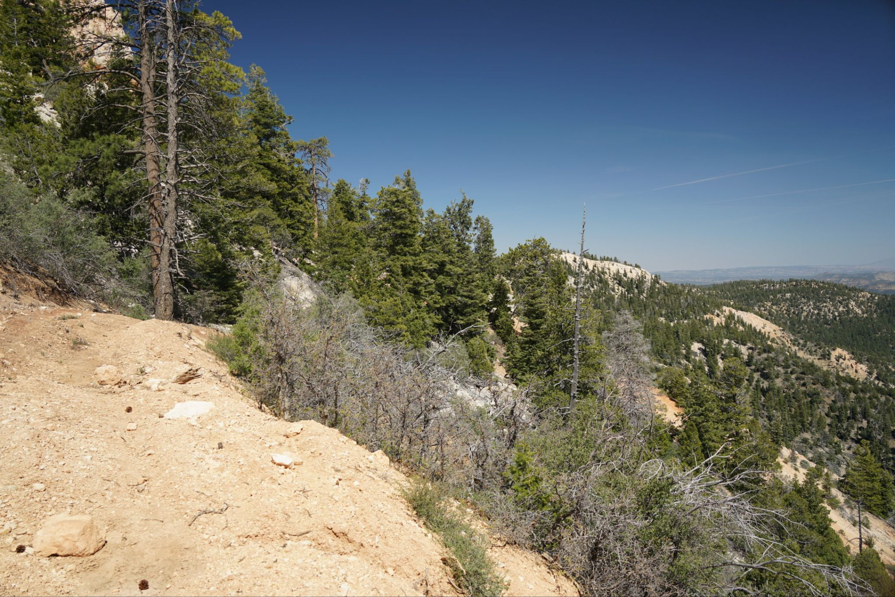
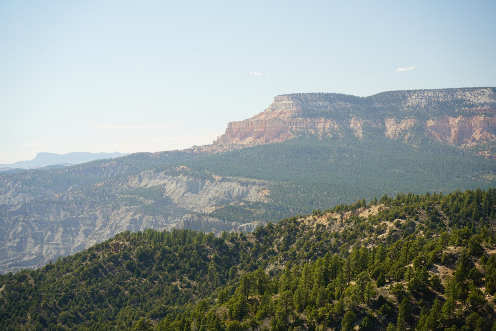

5/23/2025 - Canaan Peak
Along the way from Ashdown Gorge to Escalante I made a quick detour on a rough 10 mile dirt road to a short 4 mile round trip trail to Canaan Peak, which overlooks the higher steppes of the Paria Wilderness. The road was rutted and the surrounding ponderosa trees casted shade on the road making it difficult to see potholes. At one point I was going about 25 mph and maybe it was a combination of the shade and angle of sun that made seeing the road difficult, but there was a cut in the road that I didnt see. As i drove over it in a split second I realized what was happening and then heard a loud thud and plastic scraping sound. Apparently, the bottom plastic part of the car fender got scraped up pretty bad and almost came off. The trail was okay and had a nice view but just wasn't worth the time and effort navigating the rough roads.
Trailhead parking in a meadow

Most of the trail went through a dense pine forest and was without views






Powell Peak in the distance
